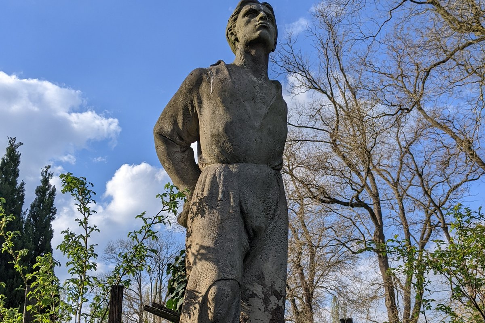
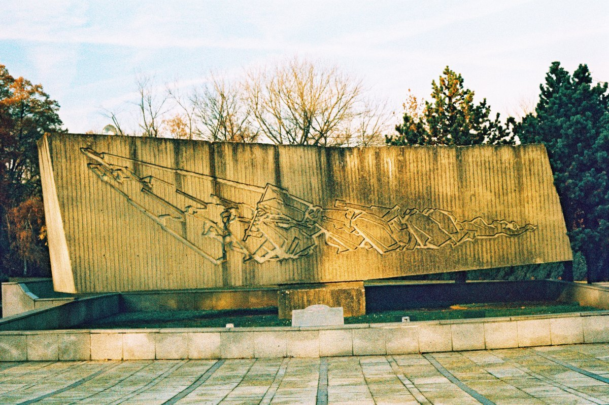
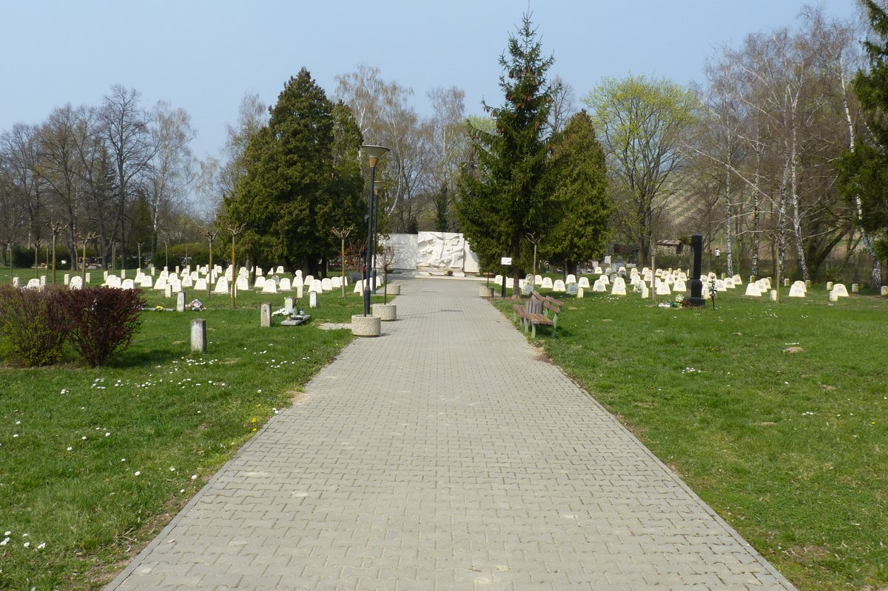
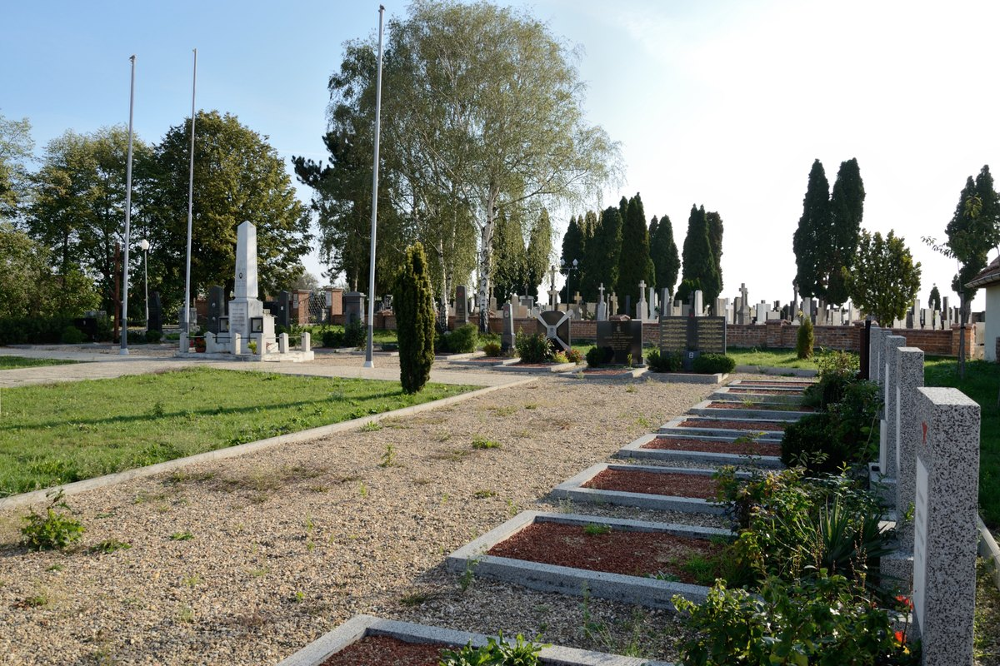
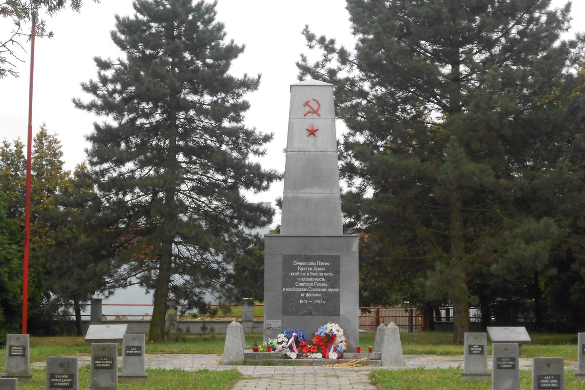
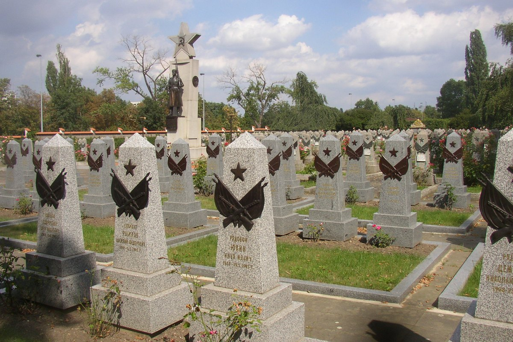
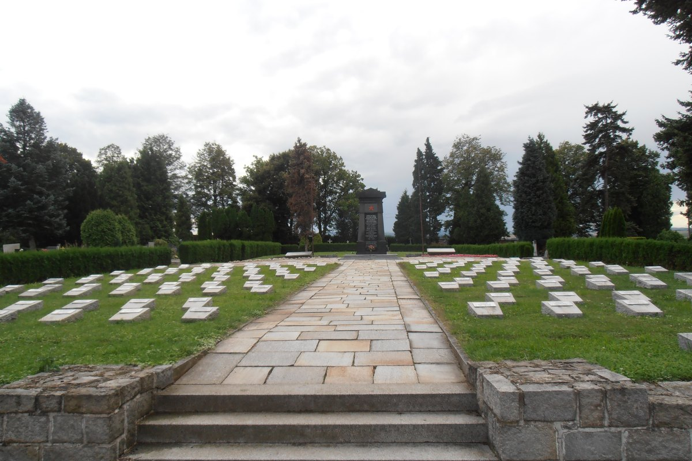

Zeitungsecke · 1945
77 воинов из Кыргызстана похоронены в Чехии. Поисковое движение Кыргызстана «Наша Победа - Биздин Жениш» передало список из 77 военнослужащих, связанных с Киргизской ССР. Все они погибли или умерли от ран в годы Второй мировой войны и покоятся на территории современной Чехии. Большинство, весной 1945 года, в последние недели войны, при освобождении Чехословакии, от Праги до Остравского края и Южной Моравии.
Список составлен по документам о безвозвратных потерях: донесениям частей, госпитальным спискам, картам военнопленных, паспортам воинских захоронений. По каждому человеку движение приводит год рождения, место призыва или проживания в Киргизской ССР, воинское звание, часть, имена родственников и место захоронения в Чехии.
Написания сохранены так, как они стоят в документах и в списке движения. Многие имена, фамилии и особенно географические названия искажены при переписывании: встречаются несуществующие «Джени-Оногомская область», «Греховатский район», «Такматский район». Это следы того, что первичный документ заполняли от руки и позже расшифровывали. Здесь эти написания не выправлены: движение просит сверять их и присылать уточнения.
Если вы узнали в списке родственника или земляка и можете дополнить сведения о нём, свяжитесь с поисковым движением напрямую: телефон указан в их публикации. Ценна любая деталь, семейная фотография, фронтовое письмо, архивный документ, воспоминание.
Если вы хотите получить фотографию могилы или организовать поездку на место захоронения, напишите нам, будем рады помочь.
Схема, а не точная карта. Крупные точки, это места с несколькими захоронениями: Годонин (13 воинов), Брно (12), Густопече (10), Оржехов (8), Глучин (7), Прага и Опава (по 4), Мост (3), Злин (2). Мелкие точки без подписи: Ждяр-над-Сазавой, Йиглава, Каплице, Градец-Кралове (Поухов), Високе-Мито, Левин, Костице, Дубняны, Нова-Лгота, по одному воину. Больше всего могил в Южной Моравии и Силезии, куда в апреле и мае 1945 года вышли войска 2-го и 4-го Украинских фронтов.
За братскими могилами Красной армии в Чехии ухаживают местные общины, они внесены в список охраняемых памятников. Снимки сделаны чешскими краеведами и опубликованы на Wikimedia Commons под свободными лицензиями.

Годонин, памятник на городском кладбище. В Годонине похоронены 13 воинов из списка, больше, чем где-либо ещё. Фото: MartinVeselka / Wikimedia Commons, CC BY-SA 4.0.

Брно, мемориал павшим воинам Красной армии на Центральном кладбище. К этому почётному захоронению отнесены 12 воинов из списка. Фото: Jaroslav A. Polák / Wikimedia Commons, общественное достояние (CC0).

Густопече, участок Красной армии на городском кладбище. Здесь лежат 10 воинов из списка. Фото: Michal Klajban / Wikimedia Commons, CC BY-SA 3.0.

Оржехов под Брно, кладбище Красной армии у места танкового боя апреля 1945 года. Здесь лежат 8 воинов из списка. Фото: Tomáš Hradský / Wikimedia Commons, CC BY-SA 3.0.

Глучин, военное кладбище Красной армии. Здесь лежат 7 воинов из списка. Фото: Lenka Bojdová / Wikimedia Commons, CC BY-SA 3.0.

Прага, Ольшанское кладбище, почётный участок павших при освобождении города в мае 1945 года. Здесь лежат 4 воина из списка. Фото: Miaow Miaow / Wikimedia Commons, общественное достояние.

Опава, памятник Советской армии на городском кладбище. Здесь лежат 4 воина из списка. Фото: Richard Zoban / Wikimedia Commons, CC BY-SA 3.0.
Номер перед именем, это номер в списке движения «Наша Победа - Биздин Жениш», по нему запись легко сверить с первоисточником.
| Фамилия, имя, отчество | Год рождения, место в Киргизской ССР | Звание, часть, родные |
|---|---|---|
| 2.Абдулаев Асатулла | 1921 · Ошская обл., Наукатский р-н, с. Иски-Наукат | ст. сержант, 8-я гв. кав. дивизия; брат Абдулаев Хабибуйла |
| 4.Абрамов Андрей Яковлевич | 1900 · г. Фрунзе, ул. Гражданская, 32 | старшина, 30-я кав. дивизия; жена Абрамова Софья Лаврентьевна (Ташкент) |
| 25.Каримов Сали | 1925 · Ошская обл., Ляйлякский р-н | рядовой, 232-я стр. дивизия; отец Джапаров Карим, колхоз «Коминтерн» |
| 28.Кобылов Тургумбай | 1900 · Джалал-Абадская обл., Цузанский р-н, совхоз им. Ленина | рядовой, 1-я гв. воздушно-десантная дивизия; жена Кобылова Инобай |
| 29.Кокоянц Петр Христофорович | 1923 · г. Ош | гв. мл. лейтенант, 1-я гв. воздушно-десантная дивизия; отец Кокоянц Христофор Михайлович |
| 31.Колдыбеков Алманбек | 1925 · Тянь-Шаньская обл., Атбашинский р-н | гв. ст. сержант, 13-я гв. кав. дивизия; мать Богоченова Брулкан |
| 33.Користов Николай Яковлевич | 1926 · Фрунзенская обл., Калининский р-н, с. Полтавка | рядовой, 842-й стр. полк 240-й стр. дивизии; мать Користова Матрена Ивановна |
| 37.Кулетов Омербек | 1917 · Фрунзенская обл., с. Куртельдек | рядовой, 232-я стр. дивизия; жена Кулетова Бельгимса |
| 46.Миронов Николай Кондратьевич | 1906 · Киргизская ССР, с. Григорьевка | рядовой, 1-я гв. воздушно-десантная дивизия; жена Миронова Степанида Григорьевна |
| 58.Рыбьянов Александр Андреевич | 1902 · Фрунзенская обл., Кантский р-н, Новопокровский с/с | гв. казак, 10-я гв. кав. дивизия |
| 60.Сайтухунов Джомар | 1920 · Иссык-Кульская обл., Пржевальский р-н, с. Ердык, колхоз «Дышим» | рядовой, 243-я стр. дивизия; жена Сайтухунова Дожар |
| 63.Сыскбаев Сары | 1921 · Тянь-Шаньская обл., Тогуз-Тороуский р-н, с. Атай | мл. лейтенант, 227-я стр. дивизия; отец Кенжикулов Сыскбай |
| 64.Тагаев Махмуд | 1912 · Джеты-Огузский р-н, Дорханский с/с | гв. мл. сержант, 8-я гв. кав. дивизия; жена Тагаева Жульхия |
| Фамилия, имя, отчество | Год рождения, место в Киргизской ССР | Звание, часть, родные |
|---|---|---|
| 1.Абдалбеков Алькула | 1921 · Тянь-Шаньская обл., Джумгальский р-н | сержант |
| 5.Аманов Есен | 1919 · Джалал-Абадская обл., Токтогульский р-н, колхоз им. Ленина | сержант |
| 16.Голованов Сергей Иванович | 1926 · п/о Кзыл-Аскарское, ул. Почтовая, 41 | рядовой; отец Голованов Иван Александрович |
| 21.Ефименко Иван Петрович | 1923 · г. Фрунзе, Ивановский р-н, с. Иваново | мл. сержант; отец Ефименко Петр Михайлович |
| 27.Качура Петр Иванович | 1923 · Фрунзенская обл., Кагановичский р-н | рядовой; брат Качура Павел Иванович |
| 39.Ларченко Павел Егорович | 1924 · Иссык-Кульская обл., Пржевальский р-н | гв. сержант; мать Наталья Григорьевна |
| 40.Малабаев Маргане | 1924 · Ошская обл., Ошский р-н, с. Шура | рядовой |
| 51.Орлов Владимир Игнатьевич | 1925 · г. Пржевальск | гв. мл. лейтенант; сестра Орлова Лина Игнатьевна |
| 52.Пахердинов Курдин | 1923 · Ошская обл., Янгиплокотский р-н, с. Мадрича | гв. рядовой; мать Зеятдинова Майра |
| 55.Почтарук Алексей Ильич | 1906 · Фрунзенская обл., Кантский р-н | рядовой; жена Акулина Петровна |
| 71.Худайбердиев Шарап | 1924 · Ошская обл., Ошский р-н, с. Ахчарск | рядовой |
| 73.Чимирикин Григорий Иванович | 1897 · г. Джалал-Абад, ст. Багиж, д. 5 | казак |
В списке движения под № 35 стоит «Кочура Петр Иванович, 1923», с пометкой о дублировании. Это та же запись, что № 27, Качура Петр Иванович. Здесь она не повторяется.
| Фамилия, имя, отчество | Год рождения, место в Киргизской ССР | Звание, часть, родные |
|---|---|---|
| 11.Бибик Павел Максимович | 1904 · Джалал-Абадская обл., Караванский р-н, с. Успеновка | рядовой, 133-я стр. дивизия; жена Бибик Меланья Павловна |
| 15.Гергильдзи Николай Дмитриевич | 1917 · с. Ново-Александровка | сержант, 203-я стр. дивизия; отец Гергильдзи Дмитрий Ульянович (г. Фрунзе) |
| 32.Конопьяев Наринбай | 1920 · Тянь-Шаньская обл., г. Нарын | гв. ст. лейтенант медслужбы, 4-й гв. кав. корпус; мать Усупова Анипа |
| 34.Косогоров Василий Ильич | 1914 · Джалал-Абадская обл., Октябрьский р-н, с. Октябрьское | сержант, 63-я мех. бригада 7-го мех. корпуса; жена Косогорова Матрена Павловна |
| 36.Куламбаев Майдук | 1925 · Джалал-Абадская обл., Базар-Курганский р-н, с. Кзелюк-Торб | рядовой, 1245-й стр. полк 375-й стр. дивизии; мать Куламбетова Джиндубай |
| 49.Нарматов Эркибай | 1918 · Ошская обл., Янги-Наукатский р-н, с. Караван | гв. ст. лейтенант, 4-й гв. кав. корпус; отец Умаркулов Нарматут |
| 57.Рудаков Павел Иванович | 1924 · Фрунзенская обл., Ворошиловский р-н, с. Перевокзальное | ст. техник-лейтенант, 11-я арт. дивизия РГК; мать Рудакова Мария Васильевна |
| 66.Тахиров Мамерджан | 1918 · Ошская обл., Узгенский р-н, г. Узген, ул. Советская, 16 | гв. лейтенант, 6-й гв. отд. понтонно-мостовой дивизион; мать Азинбабаева Тиляб |
| 70.Хлестов Василий Андреевич | 1923 · г. Джалал-Абад, ул. Красноармейская, 52 | гв. казак, 4-й гв. кав. корпус; отец Хлестов Андрей Игнатьевич |
| 72.Чилетиров Зах | 1905 · Фрунзенская обл., Буденовский р-н, колхоз «Чапаев» | рядовой, 1440-й отд. самоходный арт. полк 7-го мех. корпуса; жена Чилетирова Акор |
| Фамилия, имя, отчество | Год рождения, место в Киргизской ССР | Звание, часть, родные |
|---|---|---|
| 8.Байрамов Анатолий Мариломович | 1920 · г. Фрунзе, ст. Ксит, свеклосовхоз | гв. сержант, 8-я гв. кав. дивизия |
| 20.Джангунбаев Калдар | 1918 · Джалал-Абадская обл., Мачалский с/с | гв. мл. сержант, 6-й гв. отд. понтонно-мостовой дивизион |
| 24.Исмаилов Ишимбай | 1911 · Иссык-Кульская обл., с. Ченкомски | гв. ст. сержант, 109-я гв. стр. дивизия |
| 42.Мамадов Балтовай | 1914 · Ошская обл., Алайский р-н, с. Штоба | гв. рядовой, 42-я гв. стр. дивизия |
| 48.Нарбутаев Патта | 1905 · Ошская обл., Ляйлякский р-н, Сюлюкнинский с/с, колхоз им. Ленина | рядовой, 30-й отд. истребительно-противотанковый арт. батальон |
| 61.Сипулин Кондратий Назарович | 1898 · Джалал-Абадская обл., Октябрьский р-н, Ореховский совхоз | гв. казак, 10-я гв. кав. дивизия |
| 62.Суванов Касим | 1904 · Киргизская ССР, Сузакский р-н, с. Ультазия | рядовой, 52-я стр. дивизия |
| 77.Яськов Иван Васильевич | 1922 · ст. Карабалта | рядовой, 6-я стр. дивизия |
| Фамилия, имя, отчество | Год рождения, место в Киргизской ССР | Звание, часть, родные |
|---|---|---|
| 3.Абекеев Асанбай | 1925 · Иссык-Кульская обл., Тюпский р-н, колхоз «Сарытовая» | гв. рядовой, 42-я отд. гв. тяжёлая танковая бригада; отец Цесырков Абекей |
| 6.Ардарешев Раскульбен | 1925 · Фрунзенская обл., Таласский р-н, колхоз «Комсомол» | рядовой, 322-я стр. дивизия; отец Байбасулов Айдрали |
| 9.Бегалиев Анатолий | 1925 · Кантский р-н, с. Узунгир | мл. лейтенант, 140-я стр. дивизия; отец Тайляков Бегалий |
| 43.Мамедов Арап | 1915 · Джаноукатский р-н, Красный Октябрьский с/с | рядовой, 271-я стр. дивизия; мать Карашакова Адубай |
| 45.Медведев Иван Михайлович | 1922 · Калининский р-н, с. Соновка | рядовой, 226-я стр. дивизия; мать Медведева Агафья Сидоровна |
| 65.Тамимов Мокоут Рузванович | 1925 · Омская обл., Чарджавский р-н, лесосклад «Киргизия» | мл. сержант, 30-я стр. дивизия; отец Тамимов Руйзван Шайзефарович |
| 74.Шапшак Герш Менделеевич | 1919 · г. Фрунзе, ул. Пушкина, 171 | рядовой, 30-я стр. дивизия; жена Шапшак Милля Арновна |
| Фамилия, имя, отчество | Год рождения, место в Киргизской ССР | Звание, часть, родные |
|---|---|---|
| 7.Ахмедов Сайдахмет | 1916 · Ошская обл., Ошский р-н, Наримановский с/с, ул. 1 Карасу, 33 | гв. рядовой, 287-й гв. зенитно-арт. полк 7-го гв. танкового корпуса; мать Ахмедова Улмасон |
| 47.Намчалаури Абисолон Сергеевич | 1922 · Киргизская ССР | лейтенант, в/ч 4851; отец Наумча-Наури |
| 59.Савостин Петр Данилович | 1917 · Чуйский р-н | рядовой, 180-й стр. полк; отец Савостин Данил Федорович |
| 67.Ткаченко Михаил Петрович | 1916 · Киргизская ССР, Греховатский р-н | сержант; мать Ткаченко Анна |
| Фамилия, имя, отчество | Год рождения, место в Киргизской ССР | Звание, часть, родные |
|---|---|---|
| 12.Бондарь Николай Григорьевич | 1925 · Джалал-Абадская обл., Октябрьский р-н | рядовой, 107-я стр. дивизия |
| 44.Махмутов Фидахмет Резванович | 1921 · г. Джалал-Абад | рядовой, 496-й стр. полк 148-й стр. дивизии; брат Махмутов Шоя Умат |
| 50.Немцов Егор Яковлевич | 1904 · Фрунзенская обл., Такматский р-н, с. Быстровка | мл. сержант, 1130-й стр. полк 337-й стр. дивизии; жена Немцова Фекла Захаровна |
| 56.Пугачев Михаил Васильевич | 1924 · Фрунзенская обл., Панфиловский р-н, с. Чавдовар | ст. сержант, 1331-й гв. стр. полк 318-й гв. стр. дивизии |
| Фамилия, имя, отчество | Год рождения, место в Киргизской ССР | Звание, часть, родные |
|---|---|---|
| 22.Заплетин Иван | 13.03.1911 · ст. Ош | военнопленный |
| 53.Перегудов Федор Иванович | 20.03.1910 · Киргизская ССР | военнопленный |
| 75.Шевченко Иван Иосифович | 1922 · Киргизская ССР | военнопленный; отец Иосиф |
| Фамилия, имя, отчество | Год рождения, место в Киргизской ССР | Звание, часть, родные |
|---|---|---|
| 10.Беренбаев Ускура | 1924 · Джени-Оногомская обл. | рядовой, 842-й стр. полк 240-й стр. дивизии; жена Беренбаева Самат |
| 30.Колбина Надежда Дмитриевна | 1922 · Иссык-Кульский р-н, г. Пржевальск | мл. сержант, разведотдел 1-го Украинского фронта; отец Федор Васильевич (г. Фрунзе) |
| Фамилия, имя, отчество | Год рождения, место в Киргизской ССР | Звание, часть, родные | Место захоронения |
|---|---|---|---|
| 13.Буханцев Александр Николаевич | 1917 · Фрунзенская обл., с. Лебединовка | военнопленный | Соколов |
| 14.Верзилов Павел Петрович | 1926 · Фрунзенская обл., Кагановичский р-н, с. им. Кагановича | рядовой, 63-я мех. бригада; мать Ксения Николаевна | Новый Лисковец (Брно) |
| 17.Демочкин Павел Павлович | 15.07.1911 · г. Фрунзе | военнопленный, лагерь № 151313; родственница Демочкина Мария Ильинична | Левин |
| 18.Джакаев Абдукарим | 1909 · Иссык-Кульская обл., Иссык-Кульский р-н, с. Каштек | рядовой, 592-й стр. полк 203-й стр. дивизии; отец Мурзабаев Джаке | Дубняны |
| 19.Джакупов Израил Евгеньевич | 1895 · Фрунзенская обл., Калининский р-н, с. Акташак, колхоз «Ортосун» | ефрейтор, 27-я железнодорожная бригада; жена Джакулова Речитай | Ждяр-над-Сазавой |
| 23.Индыбаев Меймаджан | 1923 · Джалал-Абадская обл., Токтогульский р-н, Торкентский с/с | гв. ст. сержант, 13-я гв. кав. дивизия; мать Чоткарева Джаныл | Костице |
| 26.Карпенко Трофим Федорович | Ошская обл., Сулюктинский р-н | рядовой, 237-й отд. автотранспортный батальон; мать Карпенко Фаина Гавриловна | Йиглава |
| 38.Кутайбериков Асамбек | 1926 · Балыкчинский р-н, Чырбактырский с/с | гв. рядовой, 1055-й стр. полк; мать Якшелыкова Зурока | Каплице |
| 41.Малышев Алексей Кириллович | 1902 · Киргизская ССР | рядовой, 998-й стр. полк; жена Дарья Егоровна | Поухов (Градец-Кралове) |
| 54.Погожев Павел Алексеевич | 1909 · Иссык-Кульская обл., Тюпский р-н, совхоз «Техника» | рядовой, 113-й армейский запасный стр. полк 1-й гв. армии; жена Погожева Прасковья Филипповна | Високе-Мито |
| 68.Тургумбаев Туйля | 1914 · Фрунзенская обл., Кантский р-н, с. Анудуп | рядовой, 166-й стр. полк; жена Усувальева Алкуш | Брунталь |
| 69.Тушков Дмитрий Иванович | 1906 · Фрунзенская обл., Калининский р-н | рядовой, 232-я стр. дивизия | Нова-Лгота |
| 76.Юсипов Мамадьян | 1915 · г. Ош, колхоз им. Коммуны | рядовой, 22-я гв. танковая бригада | Оломоуц |
Всего в списке движения 77 записей и 76 человек: № 27 и № 35, это один боец, Качура Петр Иванович из Кагановичского района, продублированный при переписывании.
Пятеро погибли в плену: № 13, 17, 22, 53 и 75. Их могилы, это Мост, Соколов и Левин, места, где стояли лагеря и рабочие команды военнопленных. Остальные погибли в бою или умерли от ран в апреле и мае 1945 года, когда войска 2-го и 4-го Украинских фронтов вышли в Моравию и Силезию. Единственная женщина в списке, младший сержант Надежда Дмитриевна Колбина из Пржевальска, разведотдел штаба 1-го Украинского фронта, похоронена в Злине.
«Захоронен: Брно» у большинства бойцов из этого города означает, скорее всего, центральное воинское кладбище, куда после войны свозили павших со всей Южной Моравии. Так же с Годонином и Густопече: это крупные сборные захоронения, а не отдельные могилы.
Многие бойцы призваны из бывших казачьих станиц и переселенческих сёл вокруг Фрунзе и Пржевальска, Семиречье, с которым связан этот архив: Быстровка, Новопокровка, Полтавка, Лебединовка, Кант, Талас, Григорьевка. Если фамилия из списка есть в вашей росписи или в справочниках родов на Fundus, это повод для проверки. Прямых ссылок на роды здесь пока нет: сводить одну фамилию с другой без документа нельзя.
Список составлен и передан поисковым движением «Наша Победа - Биздин Жениш» (Кыргызстан). Публикация с полными сведениями по каждому воину: запись в сообществе «Киргизская ССР» на OK.ru →. Написания фамилий, имён и географических названий приведены так, как они стоят в первоисточнике. Телефон движения для родственников: +996 (555) 92-36-03.